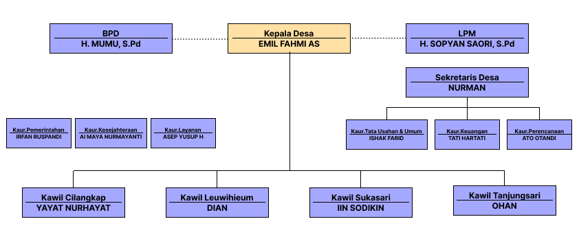

Visi
Melayani Masyarakat Desa Setiawangi secara menyeluruh demi terwujudnya Desa Setiawangi yang Religius/Islami, maju, mandiri, sehat, dan sejahtera.
Misi
- Mewujudkan pemerintahan Desa Setiawangi yang tertib dan berwibawa
- Mewujudkan sarana dan prasarana Desa Setiawangi yang memadai
- Mewujudkan perekonomian dan kesejahteraan warga Desa Setiawangi
- Mewujudkan Kesehatan Masyarakat Desa Setiawangi sehat, aman dan sejahtera
- Mewujudkan Desa Setiawangi yang religi, nasionalis, dan berpendidikan
Sejarah
Desa Setiawangi Kecamatan Jatiwaras Kabupaten Tasikmalaya berdiri pada Tahun 1985, dengan Kepala Desa yang Pertama yaitu Bapak O. Karsono, Desa Setiawangi ini memliki luas wilayah ± 915 Ha. Pada mulanya Desa Setiawangi berasal dari kata "Setia-Wangi" yang mempunyai arti menolak untuk melakukan peperangan, serta bila ada hal-hal yang bertentangan supaya diusahakan dengan jalan damai.
Sejarah Kepala Pemerintahan Desa Setiawangi
| Tahun/Periode | Kepala Pemerintahan | Keterangan |
|---|
Struktur Organisasi Pemerintahan Desa Setiawangi

Lokasi Desa
Batas Desa:
Utara
Kelurahan Setiawargi
Selatan
Desa Kaputihan
Timur
Desa Karyawangi
Barat
Desa Sukakerta